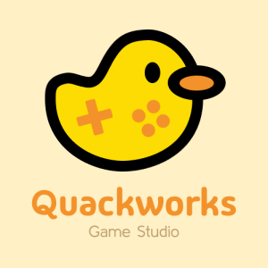
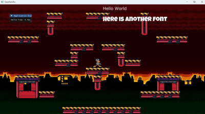

Intro
Below are some projects I have worked on and am currently working on. They aim to evidence my skills, while also taking some pride in my accomplishments.
Below are some projects I have worked on and am currently working on. They aim to evidence my skills, while also taking some pride in my accomplishments.

I was a programmer for the TIGA award nominee for student built game Crab Sticks.
A fun party game involving ball games, crabs and sticks. Going from nothing to release ready in just 2 months.
While not the most technical of games and built in Unreal Engine meaning most of the project was created using blueprints over raw C++,
working in a large team to create Crab Sticks came with different challenges to working solo.
I was mainly responsible for the UI for the game, though I worked on various gameplay aspects and bugs where needed.
As, I hadn't previously worked with Unreals CommonUI plugin this was a great learning experience for me.
My communication skills were required and improved throughout the lifetime of the project. Not only by tackling bugs together on the programming team.
Talks between the disciplines of programmers, designers, and artists happened frequently to help make the vision for the game possible through the back end of the game we created.
This clear communication was critical and allowed us to meet the 2 month deadline with a release ready game.
Working with like-minded dedicated individuals, helped spark my passion for creating games and solidified my goal of being able to do the same thing in industry.
Working with my peers to create a masterpiece I can be proud of.
My communication and teamwork skills have improved dramatically. A weekend game jam doesn't require half as much coordination as a full 2 month project does.
I have improved my skills in UE5 allowing me improved workflow and more efficient blueprints than previous.
Some new hard working friends!
Student made game in 2 months for which I programmed.

For my dissertation project I decided I wanted to investigate methods of procedurally generating audio.
Procedural generation has been a fascinating topic for me,
stemming from my love of rogue-lites and their use of procedural generation to create games that are never the same each time you play them.
Now most uses of procedural gneration are pretty solved, or can be solved with a bit of elbow grease.
From procedurally generating a single plant, to procedurally generating entire worlds.
These work well as the rules for the generation are only as complex as you need to make them, or use randomness like noise to help inspire how the generation can take place.
While I've seen many games make use of procedural generation to aid in the development of games, I've seen much less the case where games use procedural audio to help make games.
Perhaps this is due to music being a much more complex piece of data than what is usually worked with.
There are less hard rules for what sounds good with music as it can be a very subjective matter.
The aim of my dissertation, therefore, was to discover why exactly procedural audio isn't used,
and to see if I could create some procedural audio that could prove it would be usefeul.
For a full breakdown of my research you can read my dissertation from here.
My resulting code can take either a MIDI file, or a custom RTTTL style format with which to analyse pre-existing music.
Then using a Markov chain, it generates self-similar music to the input and outputs it as a .wav file, of any desired length, that can be played back or possibly used in other applications.
I found this method to be effective, with very little runtime computational cost. At least for single-layered instrument generation.
The generation does accomodate multi-layered generation, but with how Markov Chains work, the re-created audio from this is greatly diminished in quality,
and not suitable for use in outside applications.
Here is a piece of generated music using the Minecraft music as the input.
My ongoing procedural audio generator built for my dissertation project.

Alongside 3 fellow students we built our own 2D cross-platform compatible engine called Quackworks in C++ to aid in the creation of games. Using our engine we made a basic replica of Duck Game.

A C++ 2D Game Engine built by me and 3 other programmers in 8 weeks. I built the physics system.

This project is an optimisation of a simple physics simulation with cubes and spheres, as well as porting it to run on a PS5.
Building from the provided simulation which could only handle around 1000 objects I profiled the program to identify the bottlenecks and improved it to handle over 80000 objects at 60 FPS.
For memory optimisations I implemented memory trackers / canaries which allowed me to walk the heap to look for memory corruption and errors,
which were vital for helping make the more complex memory management techniques.
Memory Pools which allowed for faster memory allocation and deallocation than standard,
as well as ensuring a contiguous memory layout for data structures to help prevent cache misses.
Finally, I implemented a per frame Arena Allocator, this is extremely helpful as it detatches an objects lifetime from its new and delete call,
anything dynamically allocated during a frame is allocated to the arena.
Then at the start of a new frame the arena is reset so the memory assigned to it is freed automatically without the programmer needing to worry about it.
Longer lifetime memory can still be assigned to the memory pool of course.
For timing optimisations I implemented a simple Octree for collision handling to greatly reduce the number of collisions the original O(n^2) algorithm was performing.
I also implemented thread pooling which worked nicely with my octrees regions to parallelise collision calculations,
and learnt some valuable lessons about naievly throwing threads at problems.
Finally, I implemented SIMD instructions to greatly increase the speed of all the vector math being performed by the collision code.
I was also tasked with porting the original simulation onto a PS5. This was a daunting task due to working with unfimiliar architecture and a foreign SDK.
Undeterred by these problems I successfully created a cross platform version of the program that would run on either PS5 or windows automatically,
which utilised platform specific threading code to help improve the performance of the program along with some basic spatial partitioning.
I have learnt how a computer works at a much lower level and with a much greater understanding than previously.
I know how to profile a program and create the necessary tools to improve efficiency, identify bottle necks, and find memory leaks.
I've experienced working with different architectures and learnt important lessons in writing cross platform code.
I've improved writing and implementing thread safe code to improve program performance.
A physics simulation, optimised to be 80x better than the original and ported onto a PS5.

This project is a concurrent network application that allows for several users on a network to connect with each other to play games of pong.
Building from the non networked version of pong I created:
A networked hierarchy consisting of a main server, which handled several gameplay servers and connected clients onto those severs,
which in turn would handle connected clients playing their games of pong. It makes use of threads and tasks in c# to be able to achieve this synchronously.
The program can send encrypted data over the network using both UDP and TCP methods,
to ensure data arrives securely and fast enough to convince users they are playing the same game despite being on seperate devices.
This data is also replicated to all connected clients in the lobby so that what one user sees is the same as the other users see.
The program is server authorative, meaning the clients are simply playing a service provided by the server which
helps prevent cheating via a client sending false data. The program will also close down gracefully on both the server and client side,
preventing crashes for both and ensuring connections are terminated correctly before closure.
I learnt the fundamentals of network programming as well as how to use threads efficiently and safely to create networked programs in c#.
I learnt the difference between the communication methods of TCP and UDP and where it is best to use them.
I learnt the importance of security and how to ensure data I send over the network is sent securely.
I learnt how to synchronise games over networks to ensure multiple players experience the same thing.
A Concurrent network application in c#. Using multiple servers, communicating securely and efficiently, to allow clients to play pong.

This project was to showcase my ability to create efficient graphical effects in a real time application. It was made in DirectX11,
and displays the following methods:
- Manual Object Creation
- Phong Shading Model
- Object Texturing and specular mapping
- Loading object data using JSON
- Debug Fly Camera
- Skybox
- Alpha Blending / clipping, including transparency and fog
- Billboarding
- Terrain Generation
- Picking
It creates all these effects in real time, with a high framerate and the debug fly camera allows a user to navigate the scene
and get a greater visual of all these effects taking place.
A Graphics simulation in DX11 to showcase my ability to create and perform several graphical effects in a real-time application.

This is a project I worked on during college over a period of four months.
It was my first experience with creating games and with a lot of time and effort,
I built a game from the ground up in python using pygame, a GUI library.
I focused on creating:
Efficient data structures, of which, a recursive quadtree to handle collisions is what I'm most proud of.
Procedural content generation in a similar fashion to spelunky, one of my favorite games.
And a declarative menu system, that made me feel like I was using my own engine.
There are two game modes, classic and endless, both see the player navigating around procedurally generated levels,
created using a seed that can be set by the player or randomly generated,
collecting treasure, killing enemies, avoiding traps, climbing ladders and ropes, and blowing stuff up!
In classic mode after completing 5 levels the player will face a final boss to end the game,
but endless features unlimited levels where the player is only stopped by their own skill,
encouraging them to reach new high-scores every time they play.
After each run the player may unlock several buffs that they can pick from the next time they start a run,
and have the ability to have multiple saved profiles each with different progress and high-scores.
With all these cool features the game can get pretty overwhelming so I also included a save/load feature,
so a player can put down the game and come back later right where they left off.
Unfortunately, despite this being my first and most memorable coding project, this has fallen to the wayside.
With my transition to uni meaning I've switched my main language to c++,
I've instead decided to recreate this project in c++,
and any future developments will likely be applied to that version instead of this one.
A finished games project in python, with self-built data structures, PCG and declaritive built menus.


This project is a continuation of my previous project Going Under in python, the aim of this was to help me make the transition to c++ with code I am intimately familiar with, and the goal is to catch up to where I left off with the python version so that I can continue to make and implement new features.
C++ allows for direct memory management unlike pythons,
and so I've been working on methods to optimise my games memory usage,
such as the use of things like object pools so I don't need to keep creating and destroying objects.
I've also explored some new functionality for previoius mechanics such as the use of ENUMs for various states in the game like animation.
With some advice from my uni lecturers I've also implemented new and more efficient methods for various things,
like sprite sheets rather than seperate images.
After some work the game is now at the same standard as my python project. I've recently done some research into cyclic procedural content generation methods and I am interested to see if I could find a way to apply this to this project, that is my current goal.
A rebuild of the python version to help me learn c++, now being updated instead of the python version.